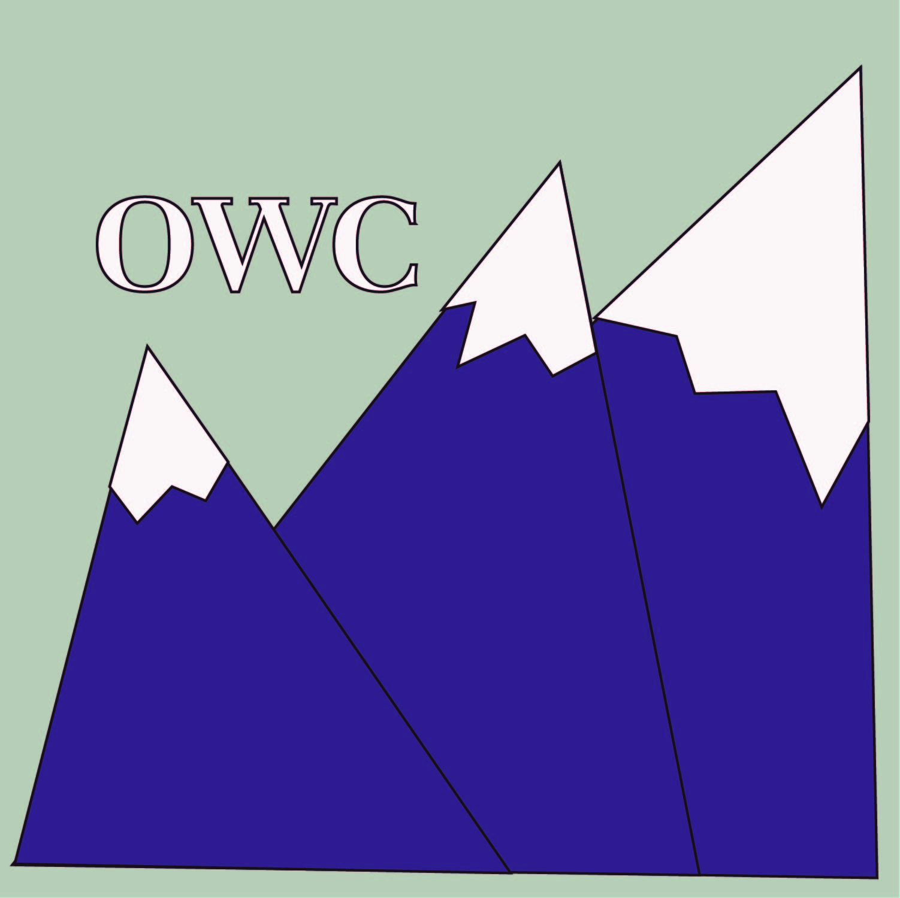

Domain Name:
ogden-weberchamber.com
Logo: 
Ogden-Weber Chamber of Commerce is a nonprofit organization dedicated to creating a stong,
connected community where any business can thrive and be successful. OWC is open for any business owner, big
or small, new or established.
We have programs and activities to help spread the word of the opening of your new business if you choose to
join. If you are already established,
come join our networking groups, business leader education lectures or women in business lucheons. If you
want to be a leader in the community and
make contacts and connect businesses and people, join our Spiker group. In any case, OWC is for any
upstanding business owner in our community. Come join
and help our community reach its greatest potential. Located in Ogden, Utah, OWC represents over 775
organizations and business in 15 cities and areas
in Weber County.